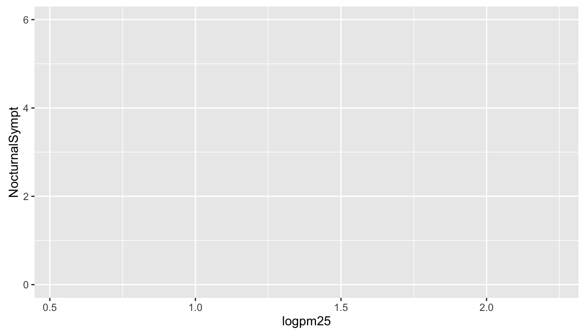

15 The ggplot2 Plotting System: Part 2
In this chapter we’ll get into a little more of the nitty gritty of how ggplot2 builds plots and how you can customize various aspects of any plot. In the previous chapter we used the qplot() function to quickly put points on a page. The qplot() function’s syntax is very similar to that of the plot() function in base graphics so for those switching over, it makes for an easy transition. But it’s worth knowing the underlying details of how ggplot2 works so that you can really exploit its power.
15.1 Basic Components of a ggplot2 Plot
A ggplot2 plot consists of a number of key components. Here are a few of the more commonly used ones.
A data frame: stores all of the data that will be displayed on the plot
aesthetic mappings: describe how data are mapped to color, size, shape, location
geoms: geometric objects like points, lines, shapes.
facets: describes how conditional/panel plots should be constructed
stats: statistical transformations like binning, quantiles, smoothing.
scales: what scale an aesthetic map uses (example: male = red, female = blue).
coordinate system: describes the system in which the locations of the geoms will be drawn
It’s essential that you properly organize your data into a data frame before you start with ggplot2. In particular, it’s important that you provide all of the appropriate metadata so that your data frame is self-describing and your plots will be self-documenting.
When building plots in ggplot2 (rather than using qplot()) the “artist’s palette”" model may be the closest analogy. Essentially, you start with some raw data, and then you gradually add bits and pieces to it to create a plot. Plots are built up in layers, with the typically ordering being
Plot the data
Overlay a summary
Add metadata and annotation
For quick exploratory plots you may not get past step 1.
15.2 Example: BMI, PM2.5, Asthma
To demonstrate the various pieces of ggplot2 we will use a running example from the Mouse Allergen and Asthma Cohort Study (MAACS), which was described in the previous chapter. Here, the question we are interested in is
“Are overweight individuals, as measured by body mass index (BMI), more susceptible than normal weight individuals to the harmful effects of PM2.5 on asthma symptoms?”
There is a suggestion that overweight individuals may be more susceptible to the negative effects of inhaling PM2.5. This would suggest that increases in PM2.5 exposure in the home of an overweight child would be more deleterious to his/her asthma symptoms than they would be in the home of a normal weight child. We want to see if we can see that difference in the data from MAACS.
NOTE: Because the individual-level data for this study are protected by various U.S. privacy laws, we cannot make those data available. For the purposes of this chapter, we have simulated data that share many of the same features of the original data, but do not contain any of the actual measurements or values contained in the original dataset.
We can look at the data quickly with str().
'data.frame': 517 obs. of 4 variables:
$ logpm25 : num 1.248 1.122 1.93 1.368 0.775 ...
$ logno2_new : num 1.184 1.552 1.432 1.774 0.765 ...
$ bmicat : chr "normal weight" "overweight" "normal weight" "overweight" ...
$ NocturnalSympt: int 1 0 0 2 0 0 0 0 0 3 ...The outcome we will look at here, NocturnalSymp, is the number of days in the past 2 weeks where the child experienced asthma symptoms (e.g. coughing, wheezing) while sleeping.
15.3 Building Up in Layers
First we can create a ggplot object that stores the dataset and the basic aesthetics for mapping the x- and y-coordinates for the plot. Here we will eventually be plotting the log of PM2.5 and NocturnalSymp variable.
logpm25 logno2_new bmicat NocturnalSympt
1 1.2476997 1.1837987 normal weight 1
2 1.1216476 1.5515362 overweight 0
3 1.9300429 1.4323519 normal weight 0
4 1.3679246 1.7736804 overweight 2
5 0.7753367 0.7654826 normal weight 0
6 1.4872785 1.1127378 normal weight 0data: logpm25, logno2_new, bmicat, NocturnalSympt [517x4]
mapping: x = ~logpm25, y = ~NocturnalSympt
faceting: <ggproto object: Class FacetNull, Facet, gg>
compute_layout: function
draw_back: function
draw_front: function
draw_labels: function
draw_panels: function
finish_data: function
init_scales: function
map_data: function
params: list
setup_data: function
setup_params: function
shrink: TRUE
train_scales: function
vars: function
super: <ggproto object: Class FacetNull, Facet, gg>[1] "gg" "ggplot"You can see above that the object g contains the dataset maacs and the mappings.
Now, normally if you were to print() a ggplot object a plot would appear on the plot device, however, our object g actually doesn’t contain enough information to make a plot yet.

15.4 First Plot with Point Layer
To make a scatterplot we need add at least one geom, such as points. Here we add the geom_point() function to create a traditional scatterplot.

15.5 Adding More Layers: Smooth
Because the data appear rather noisy, it might be better if we added a smoother on top of the points to see if there is a trend in the data with PM2.5.
Figure 15.1: Scatterplot with smoother
The default smoother is a loess smoother, which is flexible and nonparametric but might be too flexible for our purposes. Perhaps we’d prefer a simple linear regression line to highlight any first order trends. We can do this by specifying method = "lm" to geom_smooth().
Figure 15.2: Scatterplot with linear regression line
Here, we can see there appears to be a slight increasing trend, suggesting that higher levels of PM2.5 are assocuated with increased days with nocturnal symptoms.
15.6 Adding More Layers: Facets
Because our primary question involves comparing overweight individuals to normal weight individuals, we can stratify the scatterplot of PM2.5 and nocturnal symptoms by the BMI category (bmicat) variable, which indicates whether an individual is overweight or now. To visualize this we can add a facet_grid(), which takes a formula argument. Here we want one row and two columns, one column for each weight category. So we specify bmicat on the right hand side of the forumla passed to facet_grid().
Figure 15.3: Scatterplot of PM2.5 and nocturnal symptoms by BMI category
Now it seems clear that the relationship between PM2.5 and nocturnal symptoms is relatively flat amongst normal weight individuals, while the relationship is increasing amongst overweight individuals. This plot suggests that overweight individuals may be more susceptible to the effects of PM2.5.
There are a variety of annotations you can add to a plot, including different kinds of labels. You can use xlab() for x-axis labels, ylab() for y-axis labels, and ggtitle() for specifying plot titles. The labs() function is generic and can be used to modify multiple types of labels at once.
For things that only make sense globally, use theme(), i.e. theme(legend.position = "none"). Two standard appearance themes are included
theme_gray(): The default theme (gray background)theme_bw(): More stark/plain
15.7 Modifying Geom Properties
You can modify properties of geoms by specifying options to their respective geom_* functions. For example, here we modify the points in the scatterplot to make the color “steelblue”, the size larger , and the alpha transparency greater.
Figure 15.4: Modifying point color with a constant
In addition to setting specific geom attributes to constants, we can map aesthetics to variables. So, here, we map the color aesthetic color to the variable bmicat, so the points will be colored according to the levels of bmicat. We use the aes() function to indicate this difference from the plot above.
Figure 15.5: Mapping color to a variable
15.8 Modifying Labels
Here is an example of modifying the title and the x and y labels to make the plot a bit more informative.
g + geom_point(aes(color = bmicat)) +
labs(title = "MAACS Cohort") +
labs(x = expression("log " * PM[2.5]), y = "Nocturnal Symptoms")Figure 15.6: Modifying plot labels
15.9 Customizing the Smooth
We can also customize aspects of the smoother that we overlay on the points with geom_smooth(). Here we change the line type and increase the size from the default. We also remove the shaded standard error from the line.
g + geom_point(aes(color = bmicat), size = 2, alpha = 1/2) +
geom_smooth(size = 4, linetype = 3, method = "lm", se = FALSE)Figure 15.7: Customizing a smoother
15.10 Changing the Theme
The default theme for ggplot2 uses the gray background with white grid lines. If you don’t find this suitable, you can use the black and white theme by using the theme_bw() function. The theme_bw() function also allows you to set the typeface for the plot, in case you don’t want the default Helvetica. Here we change the typeface to Times.
Figure 15.8: Modifying the theme for a plot
15.11 More Complex Example
Now you get the sense that plots in the ggplot2 system are constructed by successively adding components to the plot, starting with the base dataset and maybe a scatterplot. In this section we will show a slightly more complicated example with an additional variable. Now, we will ask the question
How does the relationship between PM2.5 and nocturnal symptoms vary by BMI category and nitrogen dioxide (NO2)?
Unlike our previous BMI variable, NO2 is continuous, and so we need to make NO2 categorical so we can condition on it in the plotting. We can use the cut() function for this purpose. We will divide the NO2 variable into tertiles.
First we need to calculate the tertiles with the quantile() function.
Then we need to divide the original logno2_new variable into the ranges defined by the cut points computed above.
The not2tert variable is now a categorical factor variable containing 3 levels, indicating the ranges of NO2 (on the log scale).
[1] "(0.342,1.23]" "(1.23,1.47]" "(1.47,2.17]" The final plot shows the relationship between PM2.5 and nocturnal symptoms by BMI category and NO2 tertile.
## Setup ggplot with data frame
g <- ggplot(maacs, aes(logpm25, NocturnalSympt))
## Add layers
g + geom_point(alpha = 1/3) +
facet_wrap(bmicat ~ no2tert, nrow = 2, ncol = 4) +
geom_smooth(method="lm", se=FALSE, col="steelblue") +
theme_bw(base_family = "Avenir", base_size = 10) +
labs(x = expression("log " * PM[2.5])) +
labs(y = "Nocturnal Symptoms") +
labs(title = "MAACS Cohort")Figure 15.9: PM2.5 and nocturnal symptoms by BMI category and NO2 tertile
15.12 A Quick Aside about Axis Limits
One quick quirk about ggplot2 that caught me up when I first started using the package can be displayed in the following example. I make a lot of time series plots and I often want to restrict the range of the y-axis while still plotting all the data. In the base graphics system you can do that as follows.
testdat <- data.frame(x = 1:100, y = rnorm(100))
testdat[50,2] <- 100 ## Outlier!
plot(testdat$x, testdat$y, type = "l", ylim = c(-3,3))Figure 15.10: Time series plot with base graphics
Here I’ve restricted the y-axis range to be between -3 and 3, even though there is a clear outlier in the data.
With ggplot2 the default settings will give you this.
Figure 15.11: Time series plot with default settings
Modifying the ylim() attribute would seem to give you the same thing as the base plot, but it doesn’t.
Figure 15.12: Time series plot with modified ylim
Effectively, what this does is subset the data so that only observations between -3 and 3 are included, then plot the data.
To plot the data without subsetting it first and still get the restricted range, you have to do the following.
Figure 15.13: Time series plot with restricted y-axis range
And now you know!
15.13 Resources
- The ggplot2 book by Hadley Wickham
- The R Graphics Cookbook by Winston Chang (examples in base plots and in ggplot2)
- ggplot2 web site (http://ggplot2.org)
- ggplot2 mailing list (http://goo.gl/OdW3uB), primarily for developers